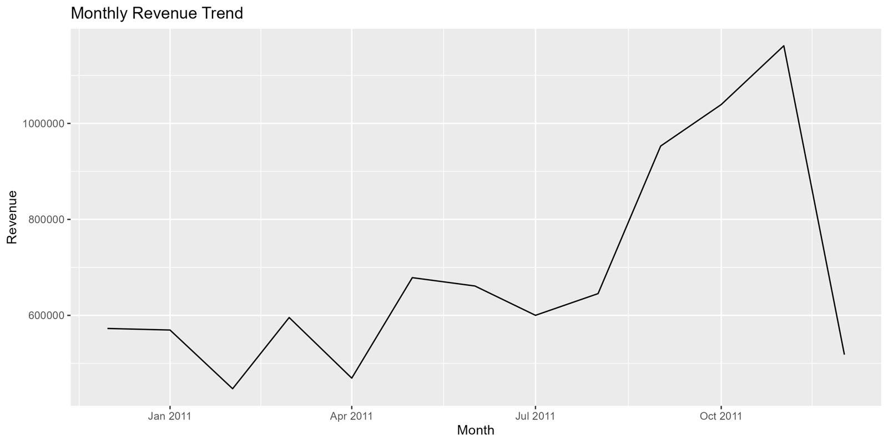
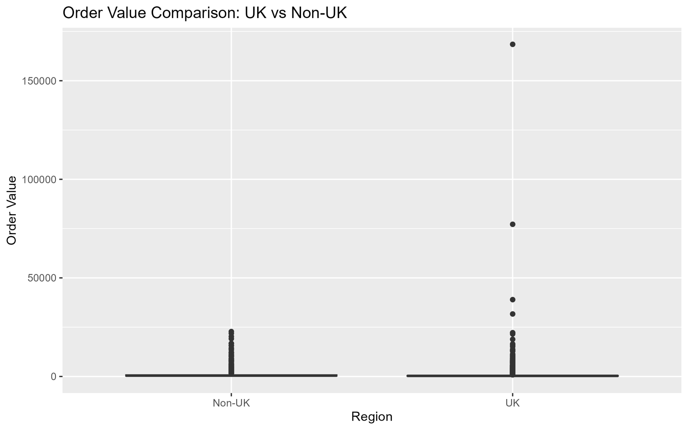

Statistics · R · Case study 05
What makes a one-time shopper come back?
A million transactions from a UK online retailer, and seven statistical methods, each chosen to answer one specific business question.
- Data
- UCI Online Retail II, ~1M rows, 2009–2011
- Methods
- CIs, t-tests, regression, logistic regression, ANOVA
- Stack
- R, tidyverse, broom, car
- Code
- GitHub ↗
01 — The questionsWhere does revenue really come from?
An online retailer wants to grow revenue but isn’t sure where to push. I framed five questions it could act on. What is a typical order really worth? Do international customers spend differently from UK ones? What drives a bigger basket? What makes a customer come back for a second order? And does order value differ by country?
02 — The methodOne method per question
After cleaning out cancellations and anonymous orders and engineering revenue and time features, each question got the test that fits it:
| Question | Method |
|---|---|
| What is a typical order worth? | 95% confidence interval on average order value |
| Do UK and international customers spend differently? | Hypothesis test |
| What drives order value? | Linear regression |
| Who becomes a repeat buyer? | Logistic regression |
| Does order value differ by country? | ANOVA |

03 — The findingsVariety, not a big first order, predicts loyalty
- UK and international customers spend differently. The difference in order value is statistically significant, so one pricing or promotion strategy shouldn’t serve both.
- Average order value differs across major countries (ANOVA), which supports country-level targeting.
- Product variety and time since first purchase are the strongest predictors of a repeat customer. A large first order has a small, negative association with coming back.


04 — The honest partWhat these results can’t tell you
Built-in arithmetic. Item count and price are components of order value, so part of the regression’s explanatory power is arithmetic, not insight.
Observation window. Customers who first bought near the end of 2011 had little time to return, which inflates the effect of “time since first purchase.” I excluded customers with under 90 days of history to reduce that bias.
In-sample only, and correlational. There is no train/test split, and these are associations from observational data, not proven causal levers.
Naming these limits is what makes the findings usable. The next step is to validate the repeat-purchase model on held-out customers and test the variety hypothesis directly with an A/B test on product recommendations.